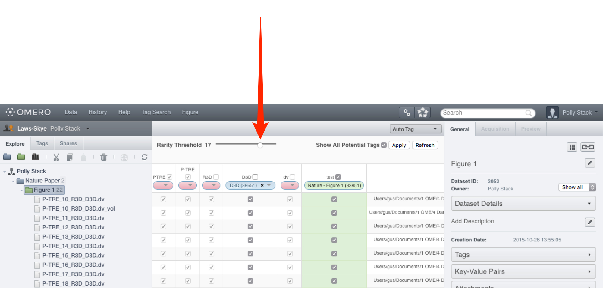
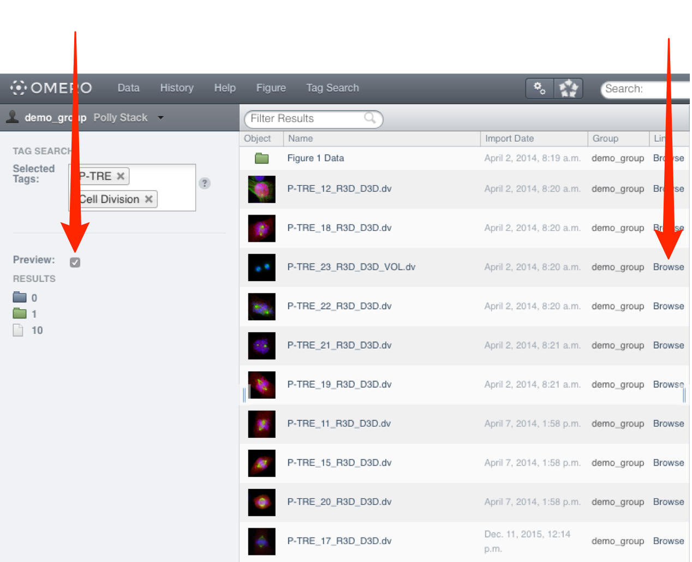

OMERO.webtagging is the umbrella name for tools developed to enhance use of text annotations (tags) in OMERO. There are two tools at present, and either or both can be installed as part of the OMERO.web client.
Web extensions for the OMERO.web client are installed by a systems administrator and are then available to all users of the OMERO system. Documentation covering the installation and configuration of the OMERO.webtagging can be found in the OMERO.webtagging overview page.
When an image is uploaded to OMERO, the original filename, including extensions and the path from which it was uploaded, is preserved. It is common for useful metadata to be encoded into the filenames and paths of data. Auto-tagger enables this metadata to be used for searching and organising the data, by the addition of annotations in the form of tags.
Select a dataset or image in the data tree.
Select Auto Tag from the view menu in the centre pane toolbar.
Columns headed with a token name are displayed in the centre pane, with a row representing each image in the dataset.
The initial display shows only existing tags, either already attached to images or not attached but matching a token.
If an image already has a tag applied to it, or if the token for a column is present in this image, checkboxes in the rows are auto-selected.
A green background in a cell indicates the image has that tag applied to it.
Select the Show All Potential Tags checkbox to generate columns for tokens which do not match any tags in the system.
The drop-down buttons in the headers of the columns are colour-coded as:
Pink (empty drop-down button) - indicating a token which did not match any existing tags in the system, or there were multiple matching tags and there was no way to make a determination as to which was intended.
Blue (tag name in drop-down) - indicating a token which matched exactly one existing tag and has been automatically mapped to this tag. Blue columns are also shown when the user manually applies a mapping.
Green (tag name in drop-down) - indicating a tag which is already applied to some images in this dataset, but does not match any of the tokens.
The default rarity threshold setting is 2.
Use the Rarity Threshold slider to adjust the threshold at which tokens are displayed.
Lowering the threshold will display more, and raising fewer, of the tokens found on the images.
Click the Apply button to save the changes.
Click the Refresh button to reset the table to its original state without applying changes.

Note
Tokens that are only numbers are ignored, as these are usually very numerous and it is impossible to intelligently map them at this time.
The filename is tokenised using a space, period or underscore as the splitter.
Click on the Pink button drop-down to add a suggested tag.
Select New/Existing Tag.
Edit or accept suggested tag name.
Add a description if required.
Click OK.
Once happy with the suggestions indicated by the boxes ticked in the centre pane, click the Apply button, which will attach the tags to the images.
OMERO Tag Search provides a way to search for images using tags that are attached to them, via a continuously refined list of available search terms.
At the start, a list of all tags is shown, then as tags are selected from the list, only additional tags that are also attached to the images are made available to refine the search. Further refinement steps can be used to reach the desired granularity of result.
Click on Tag Search in the main toolbar.
Click in the Selected Tags text box and a list of the tags attached to all the images will appear (AND search).
The list will be filtered dynamically as you type into the box.
Click to select the desired tag.
The numbers of objects which that tag is attached to is displayed for each type of object.
Click to the right of the most recently added tag and continue to refine the search by typing and selecting additional tags that are also attached to the objects.
Select the Preview checkbox to display the filtered objects in the centre pane.
Click on the Browse link to view an object in the Data window.

All Tutorial Material is available on line at: help.openmicroscopy.org
The Main OME website is at: www.openmicroscopy.org